Rencontre au Bar de la Régence
Préface
Je souhaite exprimer ma gratitude envers Komayō, qui m'a initié au jeu de stratégie captivant qu'est l'ōgi. Sa présence énigmatique a laissé une marque significative dans ma vie. Ce qui suit est le récit de notre rencontre, un souvenir précieux que je souhaite partager à travers ces lignes.
Prologue
Alors que l'horloge sonnait la fin de la journée de travail, je me trouvais assis à mon bureau, comme tant d'autres soirs. Les bureaux étaient encore remplis de collègues affairés, tous pris dans cette mentalité de rester tard au travail, de prolonger la journée au-delà de l'heure réglementaire. C'était une scène familière, une pratique courante dans notre entreprise.
Je faisais semblant de travailler, fixant l'écran de mon ordinateur tout en sachant que je n'étais pas vraiment productif. L'atmosphère était empreinte d'un mélange de résignation et d'obligation sociale. Nous étions tous conscients que partir avant les autres serait perçu comme une faiblesse, un manque d'engagement envers notre travail. Pourtant, ce soir-là, quelque chose était différent. Une énergie étrange semblait circuler dans l'air, comme une promesse de quelque chose de nouveau et d'inattendu. Je sentais cette excitation grandir en moi, cette envie de briser les chaînes de la routine et de l'attente.
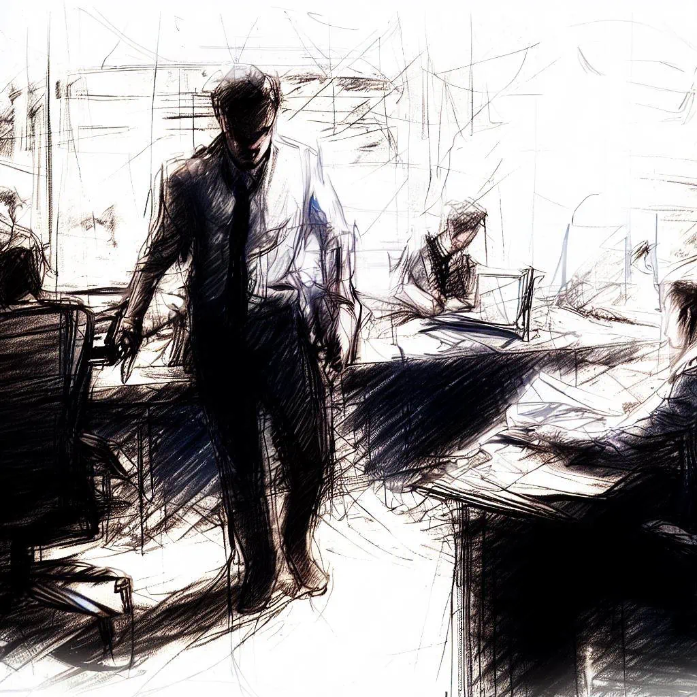
Sans une once d'hésitation, je me suis levé subitement de ma chaise, attirant l'attention de mes collègues qui me fixaient, stupéfaits.
Je vous laisse le soin de finir !
ai-je annoncé.
Les expressions de surprise continuaient à me suivre tandis que je m'éloignais de mon poste de travail, laissant derrière moi l'atmosphère étouffante du bureau.
L'Échappatoire du Bureau
Après une longue journée passée dans l'atmosphère stérile de mon bureau, je me libérais enfin de ses chaînes. Tel un errant sans destination, je me laissais porter par le crépuscule d'Ōsaka, m'abandonnant à la providence.

La douce brise vivifiante de cette soirée de pleine lune effleurait mon visage, comme si elle était guidée par une main invisible.
La frénésie diurne, aussi vaine que pesante, s'effaçait peu à peu, remplacée par une sérénité nocturne. Mes pensées, encombrées par le labeur routinier, commençaient à s'éclaircir sous l'immensité étoilée et le calme tranquille de la ville.
Je me laissais guider à travers les ruelles entrelacées. La monotonie du jour semblait se dissiper à chaque coin de rue, succédant au mystère de l'inconnu. Les gratte-ciels, sous leur voile nocturne, perdaient leur aura intimidante pour adopter une présence douce et accueillante.
Immergé dans le rythme effervescent des allées commerçantes, les arômes émanant des restaurants de rue et les murmures envoûtants des conversations nocturnes tissaient une fresque urbaine vivante et captivante. Mon esprit, fatigué mais insatiable, se languissait d'un défi intellectuel, d'une évasion face aux tracas de la journée. C'est alors que mon regard fut attiré par une enseigne modeste mais prometteuse, celle du Bar de la Régence, un sanctuaire fréquenté par des joueurs de shōgi de renom.
Caché au cœur de cette ruelle tranquille, le bar se présentait à moi comme un mystère à résoudre, chuchotant à mon esprit la promesse d'un duel de shōgi. Le charme discret de ce lieu résonnait en moi, esquissant une tentation chargée de mystère et de curiosité, m'invitant à franchir le seuil de l'inconnu.
L'Antre de la Partie
Le Bar de la Régence, baigné d'une lumière douce et diffusée, et empli d'une chaleur accueillante, se présentait comme un havre de tranquillité. La sérénité du lieu était teintée par les nombreuses parties de shōgi qui, au fil des générations, avaient animé les soirées des amateurs du jeu.
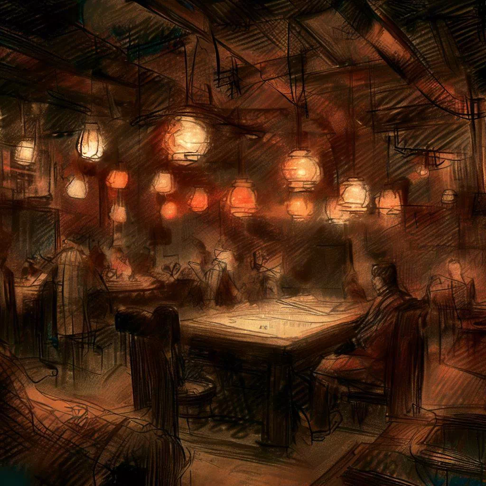
Avant de plonger dans une partie, je commandai un verre de saké. Le parquet ancien craquait doucement sous mes pas, tandis que mes yeux s'habituaient à la pénombre apaisante. Le cliquetis des pièces de shōgi, les murmures des joueurs et le bruissement des éventails ajoutaient à l'atmosphère mystique. L'arôme du bois vieilli, mêlé à celui de l'encens, apaisait mes sens, me préparant à la joute intellectuelle à venir. Des joueurs de tous âges étaient absorbés par leur partie, chaque mouvement marqué par des expressions de tension, de joie ou de déception. C'était un ballet silencieux de stratégies et de sagacité qui se déroulait sous mes yeux.
Dans un coin du bar, une femme attira mon attention. Assise seule à une table, telle une lune solitaire dans le ciel nocturne, elle dégageait une aura captivante. Son kimono d'un bleu profond comme la nuit étoilée contrastait avec sa peau claire et lumineuse. Ses longs cheveux noirs tombaient en cascades soyeuses, reflétant la lumière douce du bar. Une énergie presque tangible émanait d'elle, créant une présence qui emplissait l'espace autour d'elle.
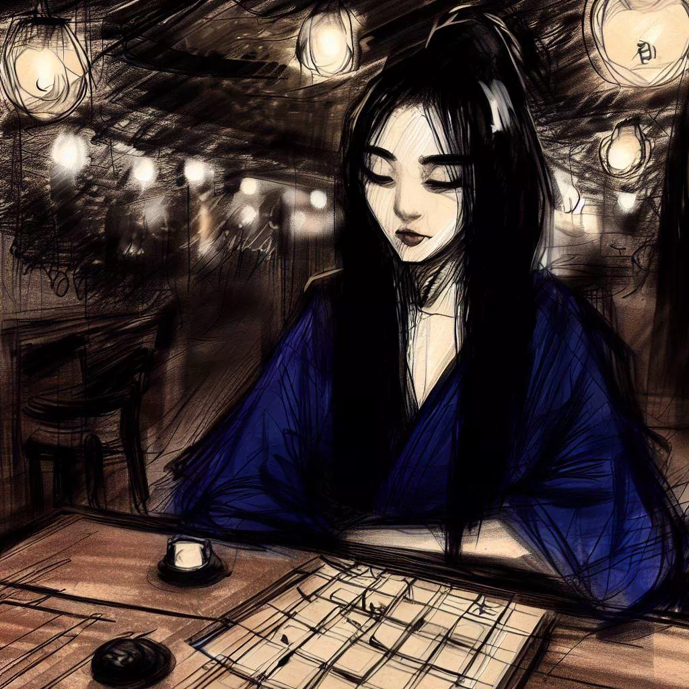
D'un pas discret mais déterminé, je m'approchai, esquissai un sourire courtois et lui proposai une partie.
Leçon Nocturne
Sa réponse à ma proposition fut un sourire enjôleur qui illumina son visage, une acceptation tacite qui ne nécessitait aucun mot. M'invitant à prendre place en face d'elle, elle dévoila le plateau de jeu, auparavant dissimulé sous un tissu soyeux.
À ma grande surprise, le plateau de jeu devant moi n'avait que huit cases sur
huit. Affichant un sourire espiègle, je demandai, mi-sérieux, mi-amusé :
Serait-ce par hasard un échiquier ?
Mon interlocutrice répondit en fixant mes yeux de son regard mystérieux.
Sa voix posée enveloppa le mot comme une énigme, alors qu'elle caressait
doucement la surface du plateau de sa main : C'est un ōgi, un précieux
artefact familial qui a traversé les générations
.
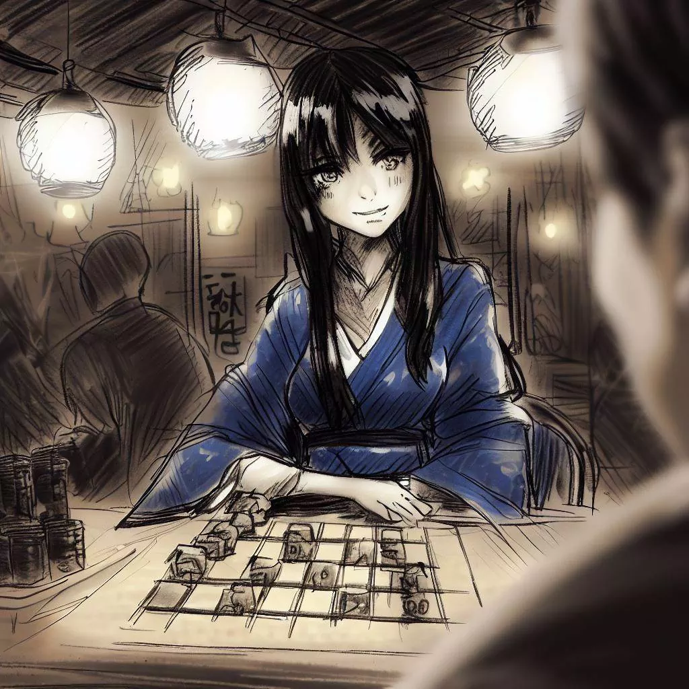
Mes yeux se reposèrent sur le plateau, adoptant une perspective fraîche, emplie d'une admiration renouvelée. C'est alors que je le remarquai. Chaque camp possédait dix-huit pièces pour débuter la partie. Une configuration qui, bien que légèrement éloignée de la norme traditionnelle du shōgi, conservait néanmoins une étonnante familiarité.
Les premières lignes étaient formées par des pions, les plus humbles des soldats, prêts à s'avancer courageusement.
Derrière eux, à la place où les tours sont généralement positionnées, se trouvaient des cavaliers, prêts à sauter dans la bataille.
La dernière rangée était l'endroit où se trouvaient les pièces les plus importantes. Aux extrémités, où se tiendraient normalement les lances, se trouvaient les tours. Elles se dressaient fièrement, prêtes à balayer le plateau de leur longue portée. À côté d'elles, ce n'étaient plus des cavaliers mais des généraux d'argent, et à leurs côtés, les généraux d'or, dont les mouvements limités mais stratégiques étaient essentiels pour la protection du roi. Enfin, trônant au centre, se dressaient deux pièces majestueuses : le roi, incarnation suprême du pouvoir, et à ses côtés, une pièce singulière portant l'empreinte gracieuse de la princesse.
Intrigué, je me préparais à poser la main dessus.
Le Règne de la Princesse
Avant que je puisse formuler mon interrogation, ma mystérieuse adversaire se
pencha en avant, son regard captivant fixé sur le plateau.
Permettez-moi de vous présenter
, dit-elle, ses doigts effleurant
délicatement la nouvelle pièce. C'est la princesse, une pièce
unique dans le jeu de l'ōgi
.
Son sourire s'intensifia, un frisson d'excitation transparaissant dans sa voix.
Autrefois, au cœur du vieux Japon, elle était un simple soldat, qui ne
pouvait avancer que d'une case à la fois, et uniquement vers l'avant.
C'était une époque plus simple, où les victoires se gagnaient lentement,
patiemment, chaque mouvement n'étant qu'un pas mesuré dans une danse
qui durait des heures.
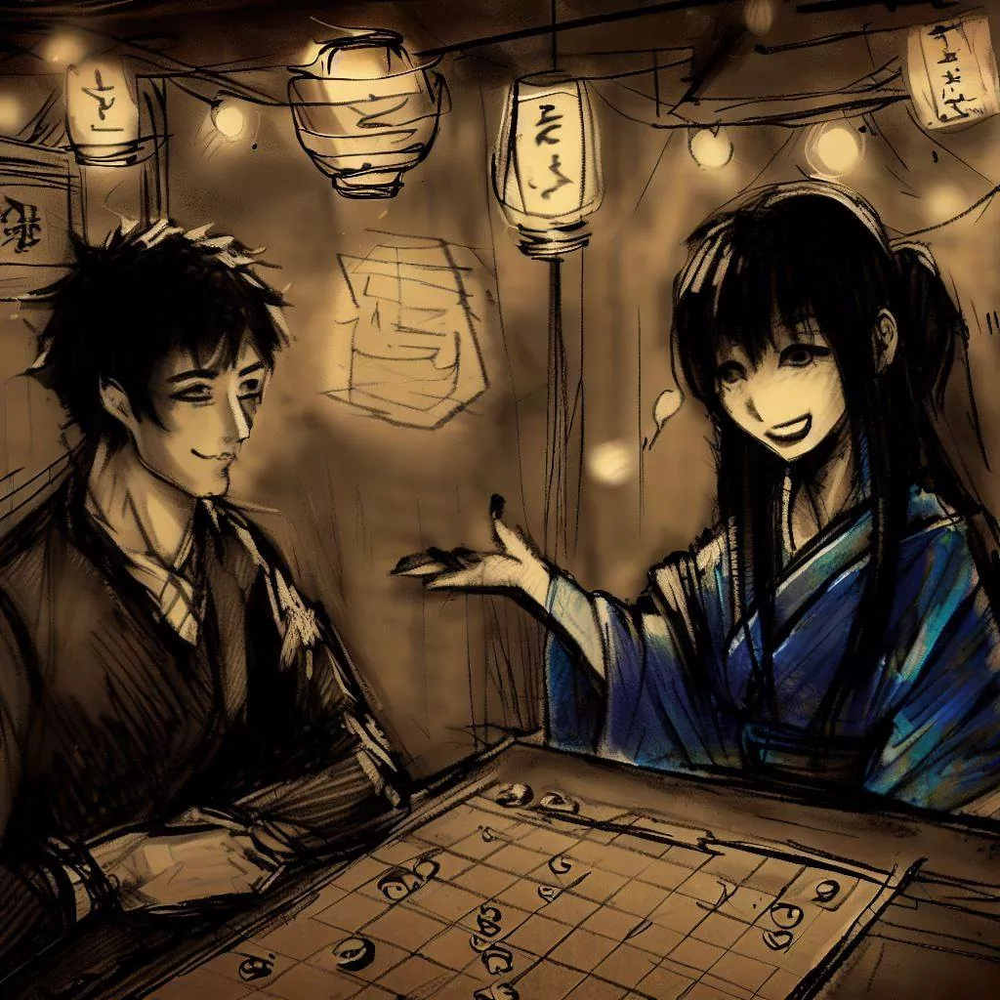
Un sourire mystérieux se dessina sur son visage, ses yeux brillèrent d'une
lueur intrigante. Puis, elle a été promue. Son rôle est devenu plus
complexe, plus influent. Elle a commencé à se déplacer plus librement, non
seulement en avant, mais aussi latéralement et en diagonale, bien que
toujours d'une case à la fois.
Son sourire s'élargit, son regard
brillant d'excitation. Et puis est
venue la révolution. L'éveil royal,
l'appelèrent-ils. Elle a été gratifiée
du pouvoir de dominer le plateau.
Comme un cavalier, elle pouvait
bondir par-dessus les obstacles dans
n'importe quelle direction. Et
comme un fou, elle pouvait glisser
le long des diagonales, sans limite
de distance. Elle était devenue la
pièce la plus puissante du jeu, la
princesse de l'ōgi.
Elle se penche légèrement en arrière, saisissant délicatement son verre pour savourer le souvenir. Un silence sacré s'installe autour de nous, comme si le bar tout entier retenait son souffle, captivé par le récit qui vient de se dérouler. Ses mots demeurent en suspens, emplissant l'atmosphère de l'histoire séculaire de ce jeu.
Mon esprit est envahi par le nouveau monde qu'elle vient d'ouvrir devant moi. Le plateau devant nous n'est plus simplement un plateau de jeu, mais le champ de bataille où les héros et les rois se sont affrontés. La princesse au centre n'est plus une simple pièce, mais une incarnation de puissance et d'ingéniosité, une force capable de renverser le destin.
Emporté par l'enthousiasme, je lève mon verre à mon tour. À la princesse
,
je déclare avec un sourire, longue vie à la princesse
.
Nos verres s'entrechoquent, le son clair résonnant comme un gong qui annonce le début de la bataille.
Le Jeu de la Nuit
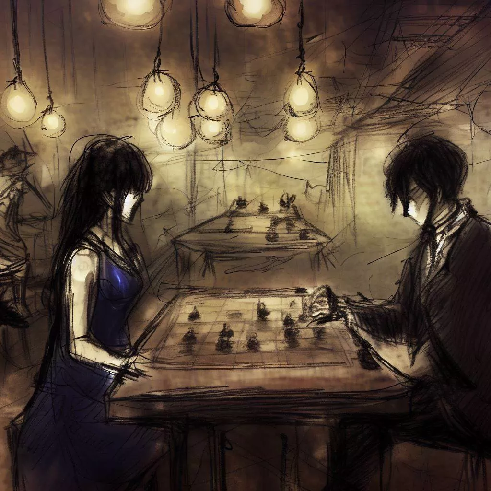
Le son retentissant de mon pion en c4 résonna à
travers le salon lorsqu'il s'écrasa sur le
plateau. C'était un geste à la fois simple
et imposant, une affirmation sans
équivoque de ma détermination à triompher. Ma
volonté de dominer le centre de l'échiquier était à
la fois un défi audacieux et un avertissement
silencieux adressé à la magnifique femme qui se
tenait en face de moi.
Peu à peu, une cour de curieux s'était formée autour de notre table. Des silhouettes floues à la périphérie de ma vision, attirées par l'étrange danse sur le plateau.
Dans l'espace délimité par la lueur des lanternes, je sentais le monde extérieur s'estomper. Mon univers se réduisait à l'ōgiban et à l'énigme vivante qui se tenait en face de moi. La conversation ambiante du bar se transformait en un murmure lointain tandis que la danse subtile des pièces captait toute mon attention. Le fou avançait avec assurance, le cavalier sautait avec audace, et la princesse — oh, la princesse — dominait le champ de bataille avec une grâce terrifiante.
Mais malgré la force de mes coups et mon intention évidente, mon adversaire demeurait imperturbable. Elle répondait avec une violence qui me prit même au dépourvu. Ses pièces s'élançaient dans la mêlée, se sacrifiant pour la cause avec une brutalité effrontée. Il y avait une élégance violente dans son jeu, un tempérament de feu déguisé en stratégie d'échecs.
Pendant que je scrutais le plateau, une sensation troublante se fit jour. Malgré la férocité de son jeu, elle ne regardait pas le plateau. Ses yeux, des miroirs réfléchissants de clarté lunaire, étaient fixés sur moi. Elle semblait lire le jeu à travers moi, déchiffrant mes pensées et anticipant mes mouvements.
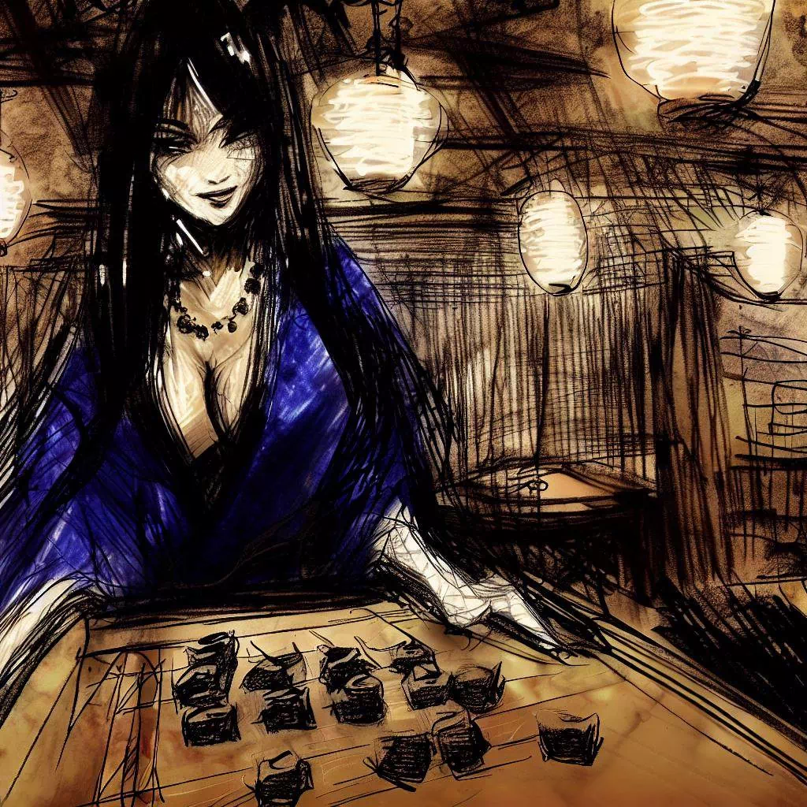
Le regard intense qu'elle posa sur moi m'incita à baisser la tête, me poussant à me réfugier derrière la sécurité du plateau. Mes joues brûlaient — peut-être l'effet du saké — et une tension insidieuse s'insinuait en moi, un mélange de combativité et d'intimidation.
Je résistais, manœuvrant mes pièces avec une détermination farouche, repoussant ses attaques par une défense méticuleuse. Cependant, chaque décision drainait mes forces, chaque mouvement devenait de plus en plus laborieux. Mes paupières se faisaient lourdes, la fatigue cherchant à prendre le dessus.
Et alors que je luttai pour rester éveillé, le sommeil, cet ennemi insidieux, triompha. Mon corps céda à l'épuisement, les lumières du bar dansant devant mes yeux qui se fermaient. Je plongeai dans une obscurité apaisante, la dernière image gravée dans ma mémoire étant le sourire triomphant de ma mystérieuse adversaire, scintillant comme une lune lointaine dans un ciel d'encre.
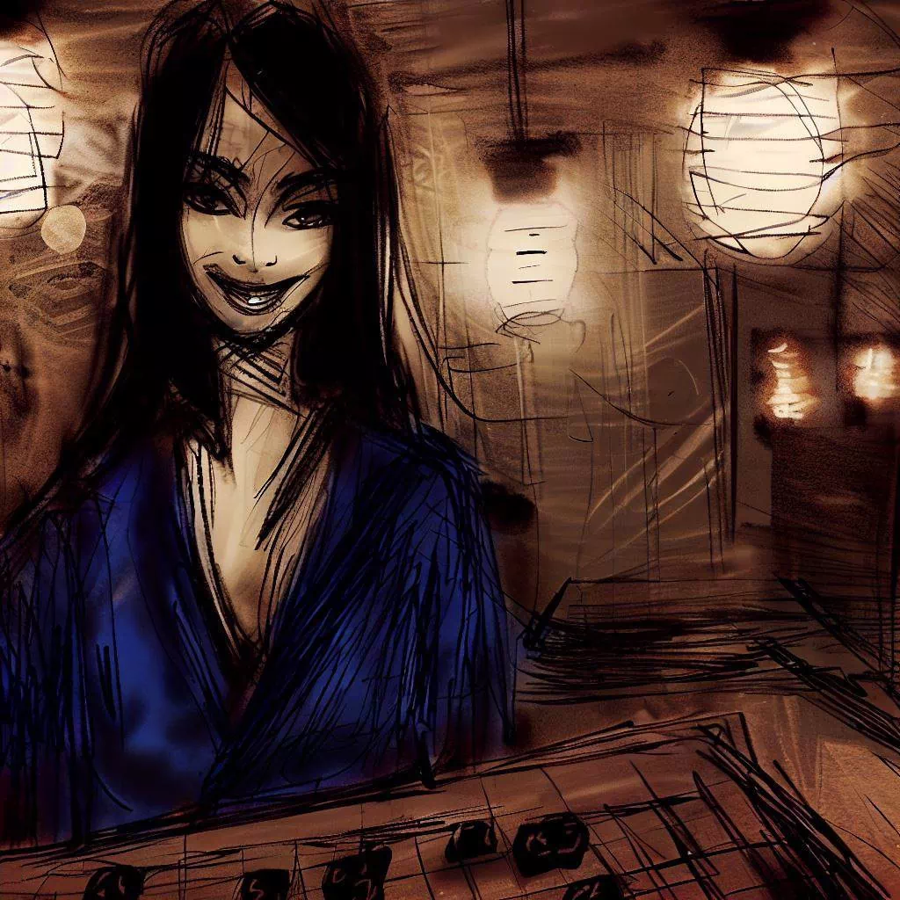
Les Échos de l'Aube
Le temps semblait s'être évaporé, englouti par les ténèbres qui enveloppaient ma conscience. Je dérivais dans un brouillard doux et silencieux, mon esprit luttant pour revenir à la surface de la réalité.
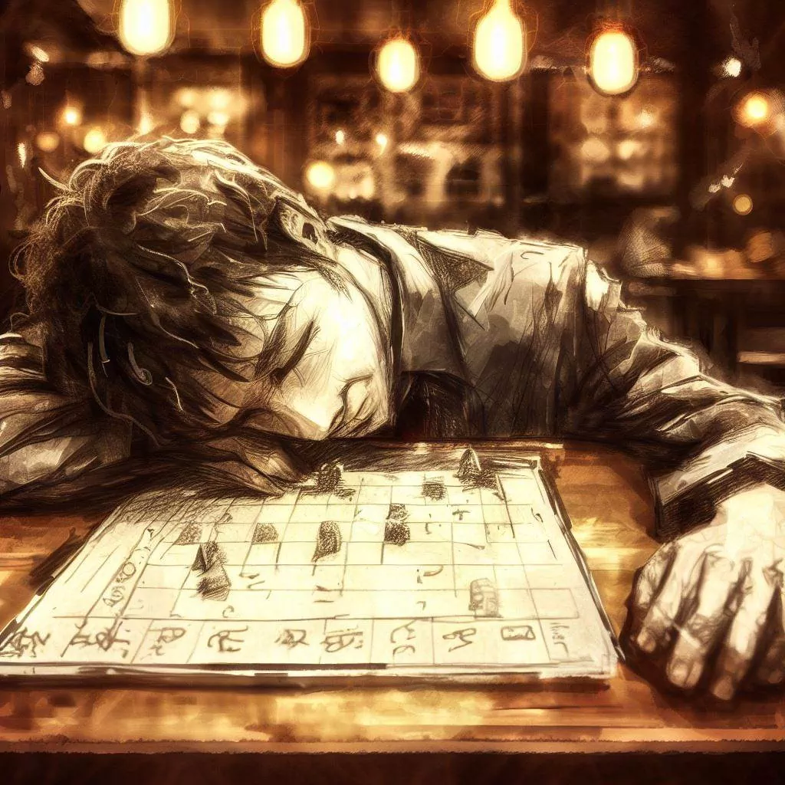
Comme un navire perdu dans l'obscurité, je retrouvai finalement le chemin vers la clarté du matin. Mes yeux s'ouvrirent sur une pièce presque intacte, baignée par la lumière tendre de l'aube, la sensation de la princesse encore tangible dans ma main. L'ōgiban était toujours là, témoin immobile du combat de la nuit. Cependant, le siège de mon adversaire était désormais vide, son aura mystérieuse ayant disparu avec l'arrivée du jour.
Son absence créait un vide indéfinissable, rendant l'atmosphère plus lourde, la pièce plus silencieuse. Mon regard fut attiré par une feuille de papier soigneusement pliée près du plateau de jeu. Avec une certaine réserve, je l'attrapai.
Un simple mot y était inscrit, Merci
, accompagné d'un prénom —
Komayō
. Une signature élégante, un dernier souvenir de cette rencontre
éphémère mais inoubliable, passée au Bar de la Régence à jouer à l'ōgi avec
l'insaisissable et fascinante Komayō.
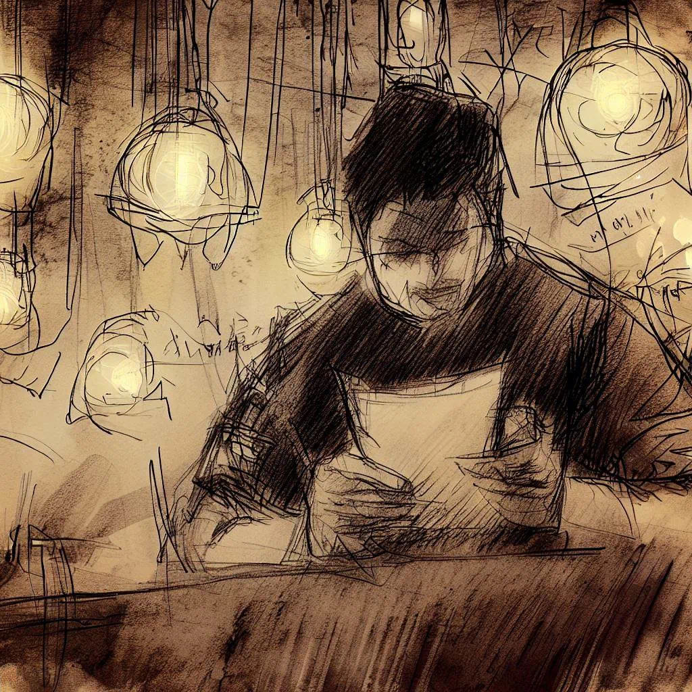
Départ Silencieux
Le premier souffle de l'aube commençait à peindre le ciel d'un bleu pâle, contrastant avec le velours noir de la nuit passée. La lune, autrefois un phare solitaire et mystérieux, s'estompait lentement, son éclat éclipsé par la lumière croissante du jour.
Ōsaka, encore endormie, m'accueillit dans son silence apaisant alors que je quittais le bar. Les rues, normalement vibrantes de vie et d'activité, étaient étonnamment calmes, leurs habituels résidents nocturnes ayant cédé la place à la tranquillité de l'aube. Les lumières artificielles qui avaient illuminé la nuit s'éteignaient une à une, remplacées par les douces lueurs naturelles du lever du soleil. Seuls quelques signes de vie, comme le battement rythmé d'un balai de rue ou le grondement lointain d'un camion de livraison, venaient perturber cette quiétude matinale.
Le souvenir de la nuit passée, des rires partagés et des secrets dévoilés autour du plateau d'ōgi, me hantait comme un écho doux-amer. Je me sentais transformé, marqué par une expérience que je ne pouvais pas encore entièrement saisir. Le monde autour de moi semblait à la fois familier et étrangement nouveau, comme si j'avais percé le voile ordinaire de la réalité pour la première fois.
L'évocation d'une brise matinale, jadis ressentie sur ma peau, me rappelait la présence désormais évanouie de Komayō. Le souvenir du goût du saké persistait, se mêlant aux réminiscences de la nuit - les arômes doux et complexes du jeu, la chaleur des conversations, l'épice de l'inconnu.
Errant dans les rues désertes, une sensation étrange s'insinuait en moi, un amalgame de mélancolie et d'un espoir imprécis. Un chapitre de ma vie venait de se clore, sans que je ne m'en rende compte, et un autre, inexploré, commençait à s'esquisser. Imprégné du souvenir de Komayō et de notre partie d'ōgi inachevée, j'étais inconscient du fait que j'avais succombé à la tentation et franchi une ligne invisible. Loin de tout ressentiment, une affection douce-amer se mêlait à mon désir de la revoir. Au cœur de la nuit, je croyais simplement rentrer chez moi, sans réaliser que j'avais entamé un périple beaucoup plus profond, une quête intangible pour retrouver Komayō, terminer notre jeu, et peut-être, découvrir une forme inattendue de rédemption.
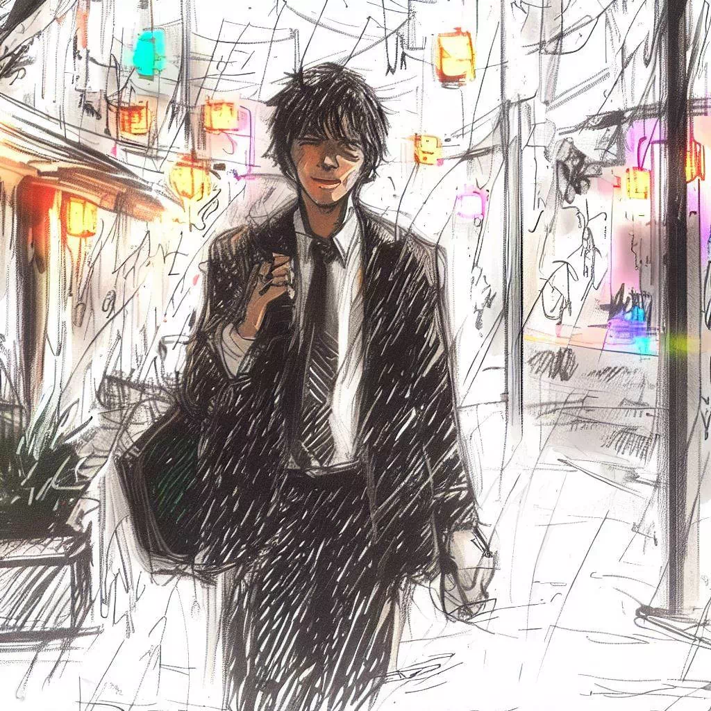